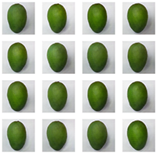
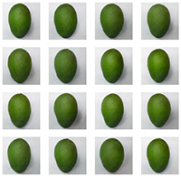
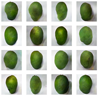

About
Fake Harumanis Mango Image Generator application is an online demonstration of Generative Adversarial Network using DCGAN. The main purpose of this web application is to generate plausible Harumanis Mango images which can pass as the real Harumanis mango to casual observer.
This web application could be used on any HTML5 compliant web browser, although for best experience, it is recommended to run it on a personal computer. Mobile device users might want to try the Budget Model version instead.
Fake Harumanis Image Generator is trained using TensorFlow with Keras, and deployed with the help of TensorFlow.js library.
What is Harumanis Mango?
Harumanis Mango (Mangifera Indica L.) is a mango cultivar (Clone no: MA 128) grown in the state of Perlis in Malaysia. The name "Harumanis" for this cultivar is registered as Geographical Indicator.
Harumanis mango has a unique ovoid oblong shape, which sets it apart from other cultivars grown in Malaysia. It has bright yellow flesh with distinguishable sweet taste. Harumanis fruiting season is around April to May each year and is a well-sought after fruit due to its rarity and exquisite taste. This lead to some unscrupulous seller charging premium price to inexperience buyer for buying non-harumanis cultivar and pass it as genuine harumanis.
Why Fake Harumanis Mango Image Generator?
Common use-cases:
- Can be use to generate plausible harumanis mango images.
- Generated images can be used as training images for machine learning and human.
- Can be used as educational tool to educate buyers into recognizing common Harumanis mango shape.
Sample Generated Harumanis Mango Images
Generated Images
  Dataset used in this Generator
This DCGAN-based generator used the Harumanis-Mango-294 Image Dataset DOI: 10.34740/kaggle/dsv/3199234, available form Kaggle.com.
Copyright 2022 © Mohammad Hafiz bin Ismail, Ray Adderley JM Gining, Tajul Rosli Razak
The dataset is licensed under Attribution-ShareAlike 4.0 International (CC BY-SA 4.0).
Author
Synthethic Harumanis Mango Image Generator web application is authored by :
Mohammad Hafiz bin Ismail <mypapit@gmail.com>.
For any enquiries, please send an email to deeplearn@uitm.edu.my
Referencing this work
You can download a BibTex reference file or you may refer to this work as:
Ismail, M. H. (2022). Synthethic Harumanis Generator Web Application - a test website for Generating Harumanis Mango Images.Retrieved , ,
from: https://demo.mobilepit.com/ai/fakeharumanis. doi:10.5281/zenodo.5862059